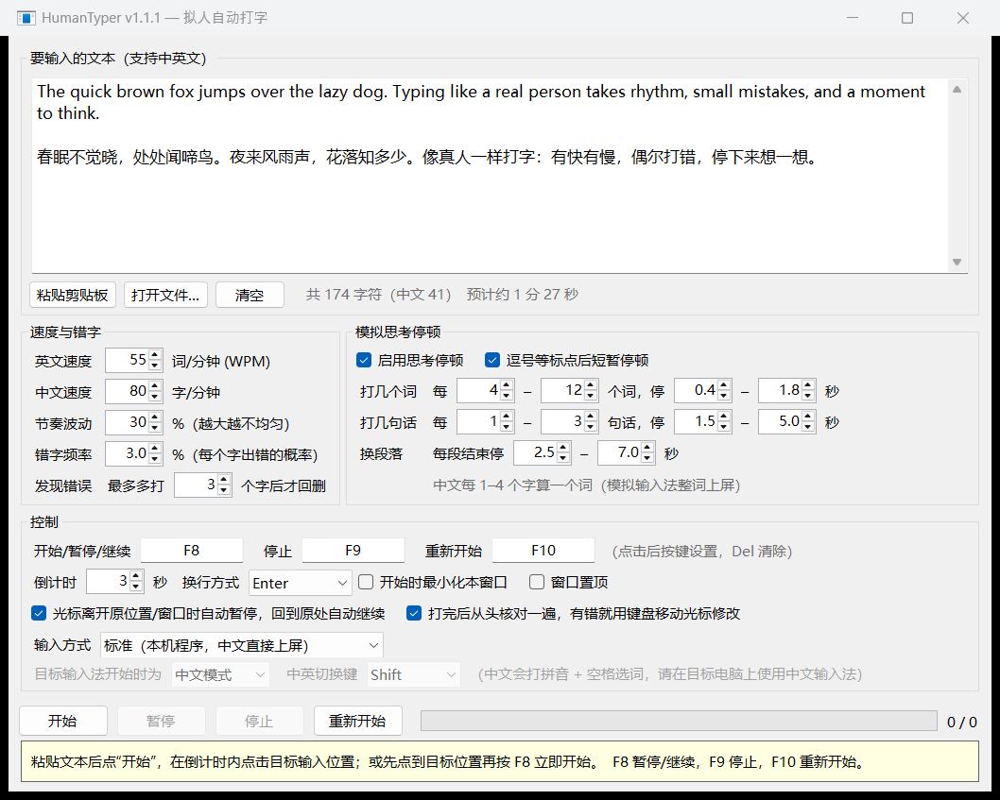
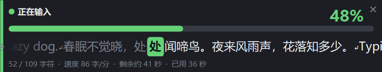

HumanTyper 把一段文字敲进任意输入框，节奏忽快忽慢，手滑了会回删重打，写完一句停下来想想。中文像输入法那样先打拼音再选词，打完还会从头核对一遍。
适用于 Windows 10 和 11。单文件约 240 KB，双击就能用，免费开源。
每一项都能在设置里调：速度、节奏波动、错字频率、停顿的频率和时长
速度随机起伏。常见的字母组合打得快，大写和符号慢一些，不会像节拍器一样匀速。
按错相邻的键、两个字母打反、选错候选词。有时多打几个字才发现，再退格重打。
每隔几个词短停一下，每隔几句话停得久一点，换段落时停得更久。
中文按 1 到 4 个字一个词，先出拼音再整词上屏；英文按每分钟词数计速，也支持 emoji。
读回输入框里实际的文字逐字比对，用方向键和退格把漏字、多字改好，只动自己打的那一段。
切走窗口或挪动光标会自动暂停，回到原处自动接着打。F8 暂停和继续，F9 停止，F10 重打。
一个窗口管所有设置，改完自动保存。打字时有三个地方显示进度。


远程窗口只转发键盘按键。切到键盘模式后，HumanTyper 发出和实体键盘一样的按键，中文转成拼音，用对方电脑上的输入法一个词一个词地选出来。
直接发送字符，中文直接上屏。适合本机程序。
和实体键盘相同的按键信号，适合远程窗口，不用装任何东西。
通过 Interception 驱动发出按键，给少数屏蔽软件按键的程序用。可一键安装和卸载。
不用安装，不用配置
从 GitHub 下载 HumanTyper.exe，双击打开。
把要输入的内容贴进文本框，也可以打开 UTF-8 或 GBK 的文本文件。
先把光标放到要输入的位置，按 F8 马上开始。也可以点“开始”，在倒计时内点一下目标位置。
标准模式不会，文字直接发送，不经过输入法。键盘模式正是借助输入法打中文，需要把目标电脑切到中文输入法。
把“输入方式”改为“键盘扫描码”。如果中文变成了拼音字母，说明对方电脑没在用中文输入法，或者处于英文模式。还不行可以试试“驱动级虚拟键盘”。
目标程序以管理员身份运行时，Windows 会拦下普通程序发给它的按键。右键 HumanTyper，选“以管理员身份运行”。
在“控制”里把换行方式改成 Shift+Enter。
免费，MIT 协议开源。驱动级模式用到的 Interception 驱动只对非商业用途免费，HumanTyper 本身不附带这个驱动。